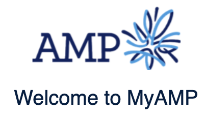
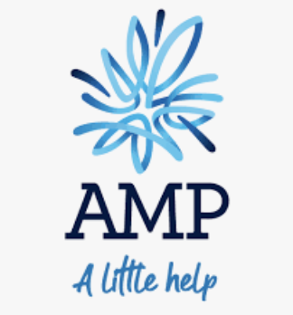

Intro

A salesforce technical consultant with a passion for solution design and project delivery.
Coding
- Force.com Technology: Apex, Aura, LWC, SOQL, Apex Triggers, Lightning flows, Data Loader, Workbench, Salesforce CLI, Apex PMD
- IDE: VS Code, Force.com IDE
- Web Technology: JS, HTML, CSS
My hobbies include basketball, gym, playing instruments and filiming short videos.
Recently I won the Robert walters Hackathon. My group and I developed a solution to solve the issue of providing insurance to people who can't afford it.
I am also a co-owner of a Gloria Jeans Coffee shop on Lorne Street CBD.

Work

MyAMP Portal - https://online.amp.co.nz
- Developed automation so data can flow straight into captial systems
- Adding cosmetic features to the website like tables, forms.
- Technologies used: Apex, Aura components, LWC, Js, CSS

Quitline - https://www.quit.org.nz
- Developed a quit admin blog feature to allow moderators to log in on the website and hide blogs/ comments and block users.
- Due to the nature of the website, adhering to security and privacy standards defined by OWASP and health coding standards was also a major part of my responsibility when developing the website.
- Adding cosmetic features to the website like the carousel, tiles and forms.
- Technologies used: Sitecore, C#, ASP.NET, HTML/CSS/SASS, MongoDB, Js, JQuery

Piki - https://www.piki.org.nz
- Developed the website from scratch while dealing with a tight deadline due to the high profile of the website.
- Developed a multiple step form that automatically sends responses to medical professionals once completed.
- Technologies used: Sitecore, C#, ASP.NET, HTML/CSS/SASS, MongoDB, Js, JQuery

Kupe - https://www.kupe.net.nz
- Tasked with improving the accessibility of the website to cater to all users. Following standards defined by W3C standards and testing code with accessibility tools like Wave, Axe Accessibility and NVDA.
- Technologies used: Sitecore, C#, ASP.NET, HTML/CSS/SASS, MongoDB, Js, JQuery
About Me
Work Experience
Technical Consultant (Salesforce) (May 2021 - Present)

Software Engineer (Salesforce) at AMP (Nov 2019 - May 2021)
Tasked with designing and delivering complex salesforce projects using both declarative and programmatic tools.

Junior Software Developer at Homecare Medical (July 2018 - Aug 2019)
My primary responsibilities at Homecare Medical are to deliver code for websites run by Homecare Medical using best practices for software development. This meant designing and coding solutions for issues reported by services users and opportunities identified by the Social Media Manager and Communications Director.

Software Developer Intern at Bayleys (Oct 2017 - Mar 2018)
Worked in a team to create a web application for Bayleys which enabled them to display more information for their listings to customers. We used ASP.NET MVC framework. The languages used were C#, HTML, CSS, JavaScript and we deployed it to Microsoft azure.

Intern Developer at Metlifecare (Oct 2016 - Mar 2017)
We developed two web applications and one console application. Two of the applications were for obtaining user feedback through a simple interactive interface and analysing it using Microsoft cognitive services. The last application was a conceptual project to see how they could incorporate facial recognition software into their company.
Education

Bsc Computer Science and Information Systems (2015-2018)
Related coursework: Algorithms and Data Structures, Distributed Objects and Services, Database systems, Human and Computer Interactions

Howick College (2010-2014)
- Basketball Team - 2011-2014
- MVP for Badminton - 2011
- Distinction for Math - 2011
Contact
Email: byronw97@hotmail.com